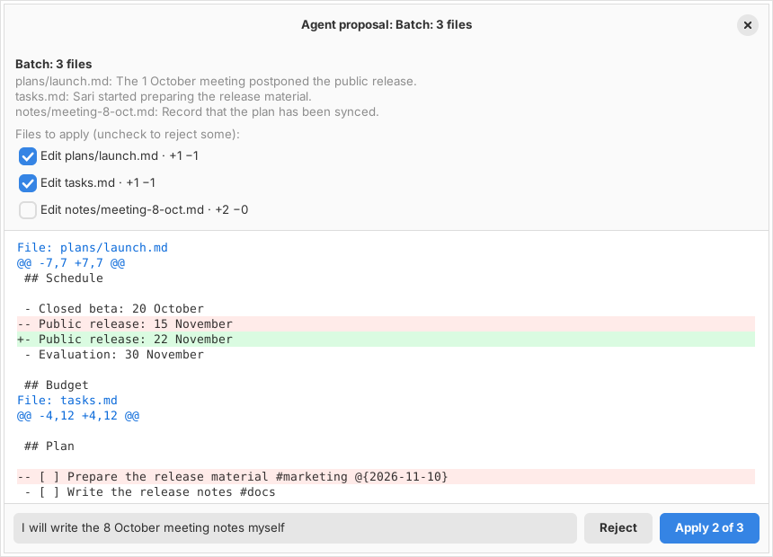

Agent
Proposals and approval
The agent never writes by itself. Every action becomes a proposal with a diff that you review; files are only touched after you press Apply.

Actions that can be proposed
| Tool | Action |
|---|---|
create_file | A new Markdown file; after it is applied it is opened in a tab right away |
edit_file | Replace an exact piece of text that appears exactly once, or every occurrence with all: true |
insert_text | Insert text at the start of a file (after the frontmatter), at the end, or after a given line. A line number must come with the contents of that line, so a miscount is rejected |
delete_file | Move a file to the Trash, not delete it permanently |
move_file | Rename or move to another folder; an open document follows its new path |
edit_kanban | Cards: add, move, mark, edit, delete. Lists: add_list, rename_list, delete_list (empty lists only) |
propose_batch | Up to 20 of the actions above at once, reviewed in one window |
The review window
- It opens automatically when the agent proposes, with the reason at the top and a colored diff in the style of a Git diff: line numbers, three lines of context, and several hunks.
- The Reject and Apply buttons. Closing the window is the same as rejecting.
- A compact status card remains in the panel with a Review changes button to open it again.
- The result of Apply, Reject, an error, or Stop is sent back to the agent, so the agent does not insist after a rejection.

Batches and partial approval
For work that touches several files, the agent uses propose_batch. All the diffs appear in one window with a checkbox per file.
- Uncheck to reject part of it; the button changes to Apply 2 of 3.
- The agent is told which files were applied and which were rejected.
- Several changes to the same file are merged into one diff.
- A file that is deleted or moved may not be touched by another action in the same batch, so every file is safe to apply on its own.
- All the files are checked before any is written. If writing fails halfway, the files that were already written are restored where possible.

Notes for the agent
The Note for the agent box below the diff is passed on together with your decision, e.g. the reason for rejecting or the correction you want, so the agent can fix its proposal.
Undo
A proposal card that has been applied has an Undo button, also in a conversation that is opened again. Undo applies the reverse of the change through the same checks:
- It fails without overwriting anything if the file has been edited again.
- A deleted file is restored from the journal snapshot; a move is reversed.
- The journal marks it Undone so the agent does not assume that the change still holds.
Changes to an open document can also be undone with Ctrl+Z, because they are applied as one editor undo step.
Safeguards
A file name outside the work folder, starting with a dot, containing .., or passing through a symlink; files that are not Markdown; and applying to a file whose contents changed since it was proposed. The agent is then asked to propose again.
- Kanban cards and lists are matched from their text and exactly one must match; otherwise the agent is given a list of candidates.
delete_listonly applies to an empty list so that cards do not disappear with it.- The proposal tools only exist when the Other files in the folder switch is on.